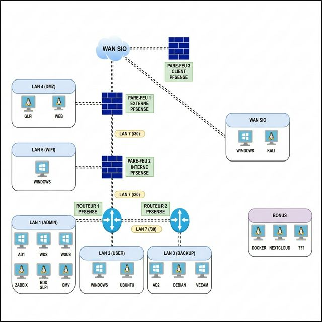

Ell@ Borate
En coursCe projet consiste à réaliser une infrastructure complète que nous avons mise en œuvre à l'aide de l'outil de virtualisation VMware et, plus récemment, PROXMOX.

Machines virtuelles ajoutées
| LAN | Machine / Service |
|---|---|
| LAN 4 | Serveur Ubuntu Nextcloud |
| Serveur LAMP | |
| LAN 8 | Ubuntu Docker |